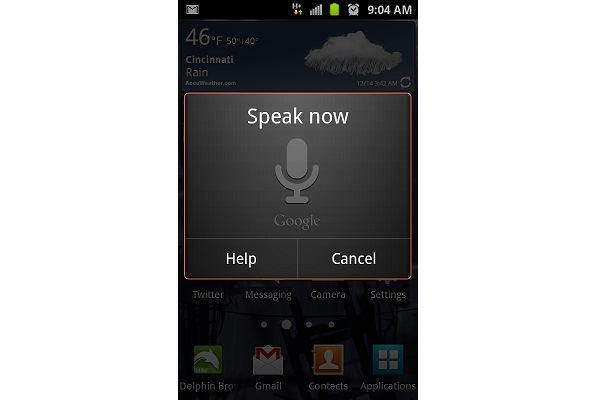

Latest rumors suggests that Google is working on a project codenamed as Majel, which is the rival of Siri. We all know about the cool features of Siri, or at least have heard about some of them. Siri uses your voice to send messages, set reminders, search information on the net and much more. There are many apps in the android market claiming that they possess the features of Siri, but I found none of them worthy. Even before Siri, there were voice command assistants, but listening only for the specific words or syntax. Siri changed the concept and made a story of success.
The project Majel was expected to complete before the end of 2011. But till now, there is no official announcements from google about project Majel. Android fans are eagerly waiting to see what great features are they going to implement with that. I think its worth waiting coz reports suggest that Google engineers are working hard to make something which delivers better performance than Siri.

One way for Google to outsmart Siri is by allowing deeper integration into the Android kernel. As Siri is not capable of doing complex tasks even now, such as send a tweet, navigational tasks etc. and if Majel can manage to handle these tasks in Android, we can say that Majel will surely outsmart Siri.
It is expected that Majel will find its way to market in 2012 itself. We have no idea about how Google is planning to implement Majel, whether as a stand alone application or integrated to Android kernel. While the next Android release- Android Jelly Bean is about to hit the market in this year, we can expect that the major feature with the Jelly Bean will be the Majel.